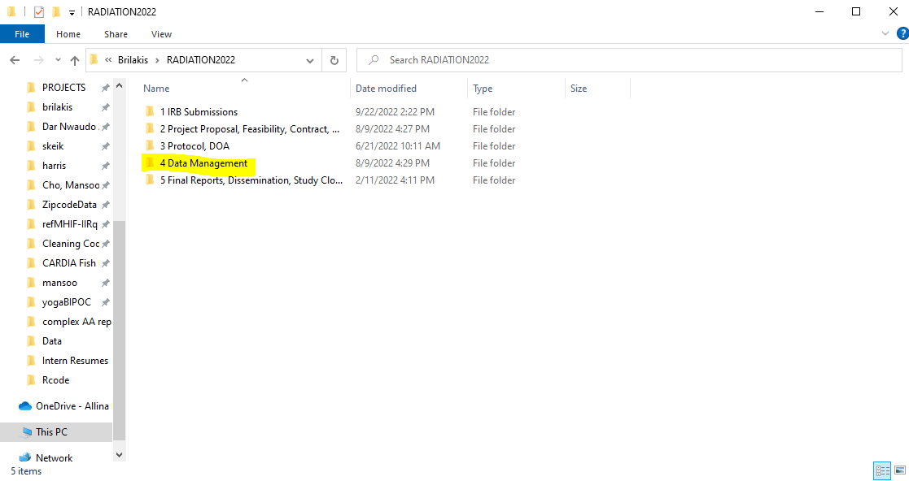
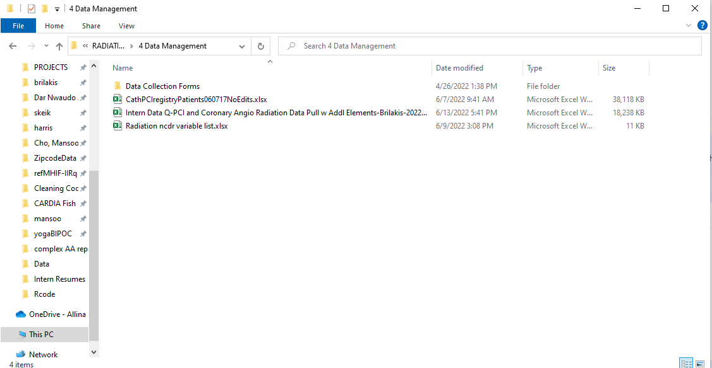
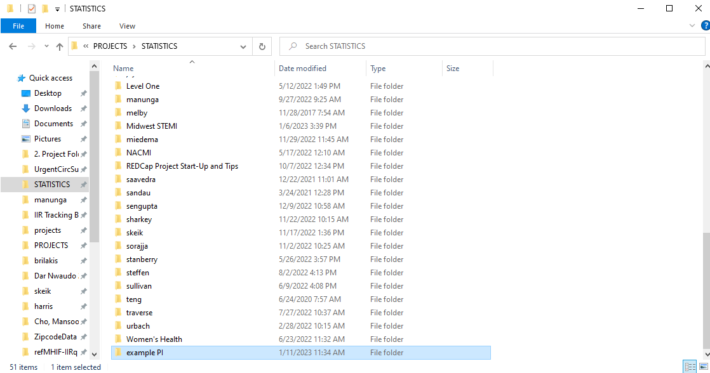
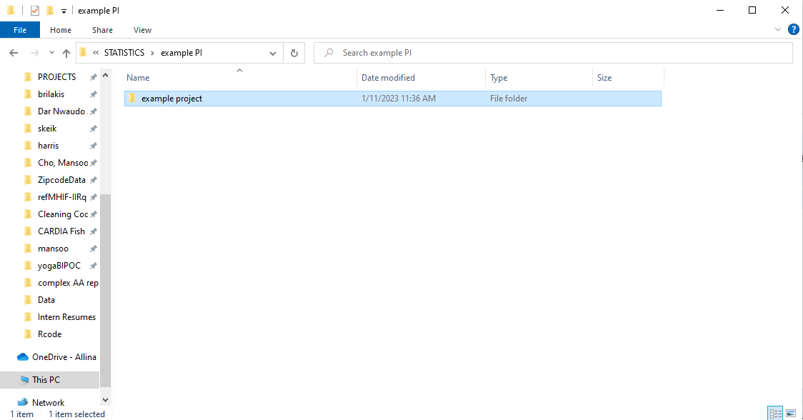
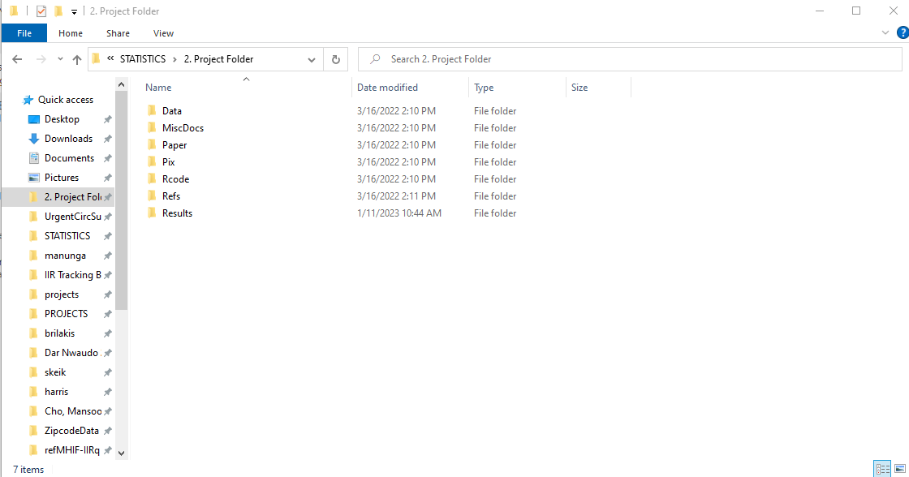
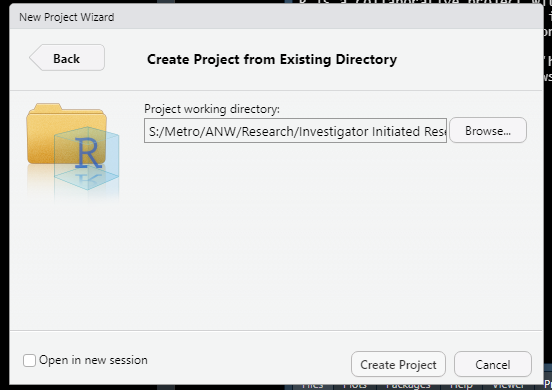
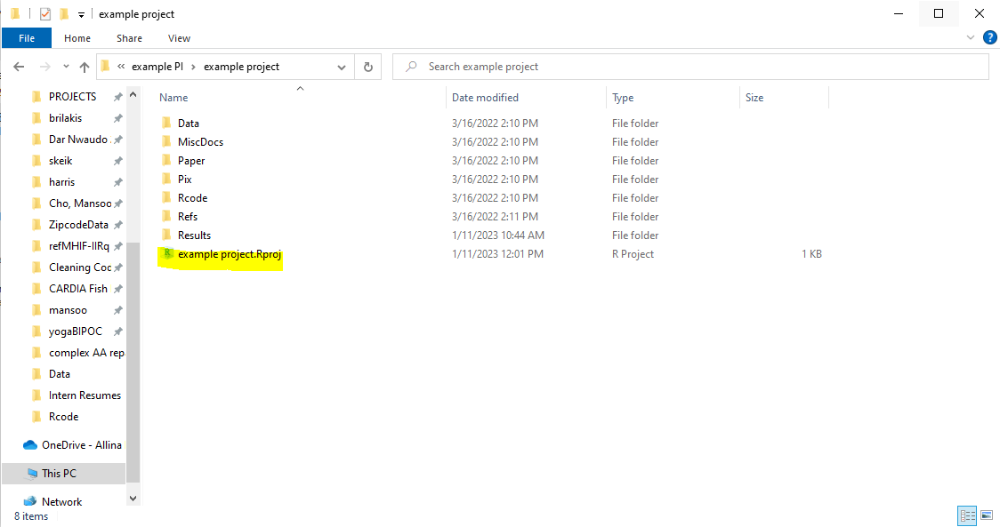
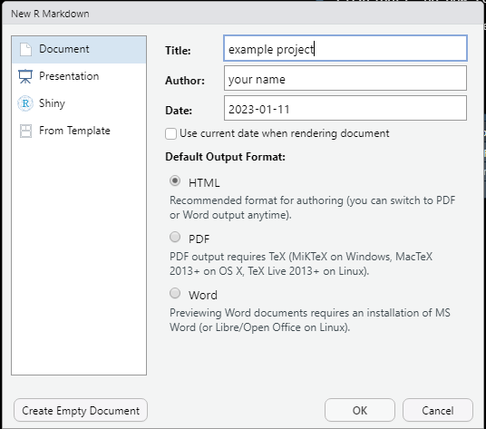

knitr::opts_chunk$set(echo = FALSE, cache = F, warning = F, message = F)
knitr::opts_knit$set(root.dir = "S:/Metro/ANW/Research/Investigator Initiated Research/PROJECTS/STATISTICS/{PI_name}/{project_name}")3 Statistics Workflow
3.1 Project directory structure
We have a shared drive where we store all the project-related files. The drive is called S Drive. In this directory you can look up the project details by the PI’s last name. For some projects the data spreadsheets are sored in a directory called Data Management.
In general project directory follows the following path format:
S:\Metro\ANW\Research\Investigator Initiated Research\PROJECTS\{PI_name}\{project_name}
Example of data file in a Data Management directory:


(Please be cautious when looking at the data files for the projects other than the ones you’re working on. You may not be allowed to inspect the data unless they are de-identified.)
If you want to look at some project background information, project protocols might be useful.
The working files for your project should go in the STATISTICS folder in this path: S:\Metro\ANW\Research\Investigator Initiated Research\PROJECTS\STATISTICS. If you’re working on your project for the first time, you may have to create your project folder. The next section will discuss how to do so.
3.2 Setting up the project environment
Create your project directories. Generally, there should already be a directory in
STATISTICSfolder for your project PI, but in case the folder is not there, create a folder with the PI’s last name.
Within this folder, create a directory with your project name.

Copy the project template folders from
S:\Metro\ANW\Research\Investigator Initiated Research\PROJECTS\STATISTICS\2. Project Folder. Paste these folders into your project directory.
The project template folders should include the following directories:
Data - Store all the data files here. (e.g.
.csv,.xlsx, data dictionaries, etc.)Paper - Store the papers related to your project such as previous studies.
Pix - Store all the figures and plots you created for the project.
Rcode - Store your code for the project here (
.Rmd,.R). You may also include the reports you created from your code.Refs - Store the resources and documents you referenced for the project.
Results - Store the tables and analysis results you created here. The tables are usually in the
.rtfformat.MiscDocs - Store all other files here. For example your personal notes for the projects, analysis plans, etc.
3.3 Manage your code in RStudio.
It is generally recommended to use .Rmd files for your project code. First you should create an R project file (.Rproj) to manage your code.
Open up your RStudio and create a new project (File -> New Project…). Then choose
Existing Directoryand choose your project folder. Click onCreate project.

You should see that your new R project file is created with your project directory name.

Create your first
.Rmdfile. In your project environment you can use the Files tab to manage your files at the bottom right corner (the layout might depend on how you set up your RStudio window). Click on File -> New File -> R Markdown… You should be prompted to this window. Name the tileyour project nameand leave others as is for now. You can directly change the author and dates in your.Rmdfile.
Automatically update the date to the current one. You should see at the top the
dateparameter is set to the current date. To automatically update it, replace it with this code “r Sys.Date()”. This will make sure that even if you forget to change the date, the date on your report will be the current date.Set the working directory to your project directory. Oftentimes working between projects, you may have to change the working directory of your current RStudio environment. Insert the following code chunk to your .Rmd file to set the working directory to your project directory. Be sure to change
PI_nameandproject_namein the path according to your project. The code chunk should have the following option as well to avoid the output of the chunk showing up on your report. ```{r setup include=F} …your code…```
- Change your
ggplottheme to MHIF specific theme. MHIF uses a specific theme for plots. Insert the following code chunk to set the theme.
library(ggplot2)
source('S:/Metro/ANW/Research/Investigator Initiated Research/PROJECTS/STATISTICS/IIR/Rfunctions/theme_mhif.R')
theme_set(theme_mhif())Once you have finished all the initial settings, save the file (File -> Save). The naming convention for .Rmd files is report_PI_name_project_name_mmddyy.Rmd (You can see the example files here: S:\Metro\ANW\Research\Investigator Initiated Research\PROJECTS\STATISTICS\example PI)